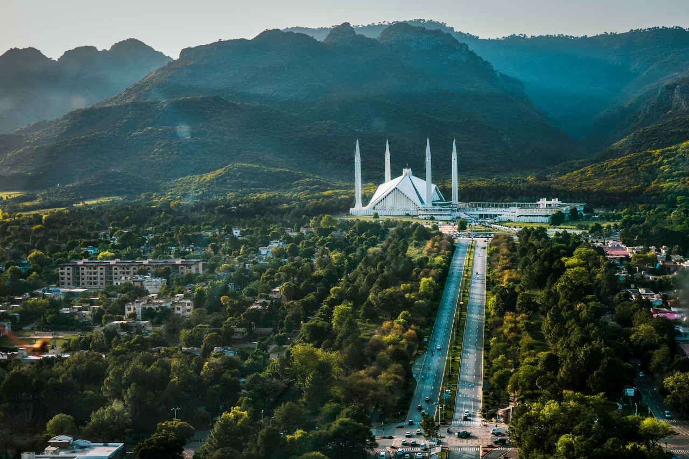

Welcome to Islamabad!
Islamabad, the capital city of Pakistan, is a modern and scenic metropolis nestled against the backdrop of the majestic Margalla Hills. Known for its serene ambiance, well-planned infrastructure, and lush greenery, Islamabad offers a perfect blend of natural beauty, cultural heritage, and modern development.
Key Features:
- Scenic Landscapes: Enjoy the scenic beauty of Islamabad with its sprawling parks, including the iconic Shakarparian Park and Daman-e-Koh viewpoint that offer panoramic views of the city.
- Cultural Landmarks: Explore the significant landmarks of Islamabad, such as Faisal Mosque, Pakistan Monument, and Lok Virsa Museum, which showcase the cultural heritage of the country.
- Modern Infrastructure: Witness the well-planned infrastructure of Islamabad, including wide boulevards, modern architecture, and diplomatic enclaves.
- Hiking and Nature Trails: Discover the hiking trails in the Margalla Hills, such as Trail 3 and Trail 5, providing opportunities for outdoor enthusiasts to enjoy the pristine natural surroundings.
- Shopping and Dining: Explore the vibrant markets and shopping centers of Islamabad, such as Centaurus Mall and Jinnah Super Market, and indulge in diverse cuisines at its numerous restaurants and cafes.
- Cultural Events: Experience the cultural events and festivals held in Islamabad, such as the National Day Parade and Pakistan Independence Day celebrations.
Plan Your Visit:
Ready to explore the beauty of Islamabad? Plan your visit now and experience the tranquility and modernity of this captivating capital city!
